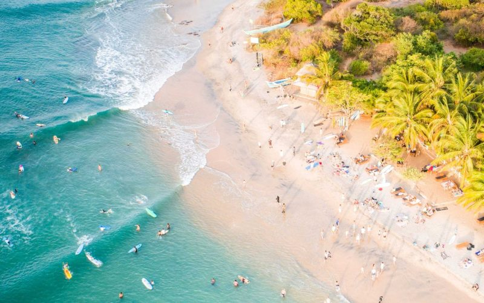
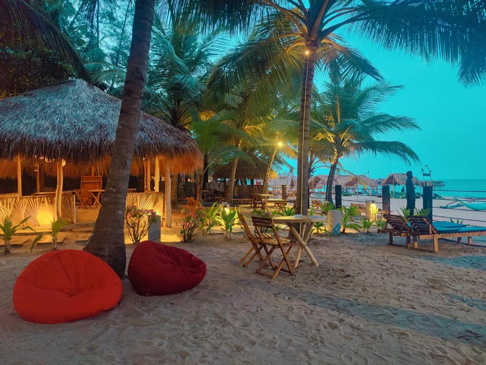
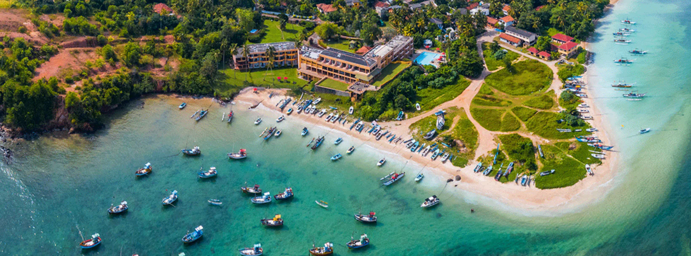

Arugam Bay is a hidden gem nestled along Sri Lanka's eastern coastline, representing an untouched paradise where turquoise waters meet golden sands. Located in the Ampara District, this crescent-shaped bay has transformed from a quiet fishing village into an increasingly popular destination for travelers seeking authentic beach experiences. Known for its pristine waters, welcoming local culture, and vibrant marine biodiversity, Arugam Bay offers visitors a rare glimpse into Sri Lanka's natural coastal splendor without the commercialization of crowded tourist beaches.

